---
{
  "layout": "note",
  "title": "5. Singular Value decomposition(SVD) - part2",
  "journal": true,
  "section": "Study",
  "topic": "Computational Linear Algebra",
  "excerpt": "",
  "classes": "wide",
  "permalink": "/blog/mechanical-engineering/computational-linear-algebra/ch5-singular-value-decompositionsvd-part2/",
  "study_area": "Mechanical",
  "date": "2025-09-11",
  "source_url": "https://jeffdissel.tistory.com/m/230",
  "header": {
    "teaser": "/blog/mechanical-engineering/computational-linear-algebra/ch5-singular-value-decompositionsvd-part2/images/img-001.png"
  }
}
---
{% raw %}<ol>
<li>Singular Value decomposition(SVD) - part2<br />
정말 중요하고 또 중요한 내용이라 part2에서 더 깊숙히 들어가 이해해보자.<br />
Eigen value decompositon(EVD)<br />
Singular Value decomposition(SVD)<br />
이 두가지는 정말 거의 모든 영역에서 쓰인다.<br />
머신러닝의 회귀모델, 분류모델,<br />
고체역학에서 탄성이론<br />
유체역학의 점성유동<br />
이 모든 것들에는 방향성이 존재하고,<br />
이 방향성을 수학적으로 다루는 도구인 'tensor'를 사용하는 이상<br />
EVD, SVD는 그냥 무조건 쓰인다.<br />
배워도 배워도 계속해서 까먹기 때문에,<br />
(그냥 무한 반복하는 수밖에 없다...)<br />
무엇보다 논리적으로 이해하는게 가장 중요한 것 같다.<br />
추상적인 개념들을 머리속에서 그리는 연습.<br />
=== === === === === === === === === ===<br />
SVD의 정의는 지난시간에 배운 내용 그대로 다음과 같다.<br />
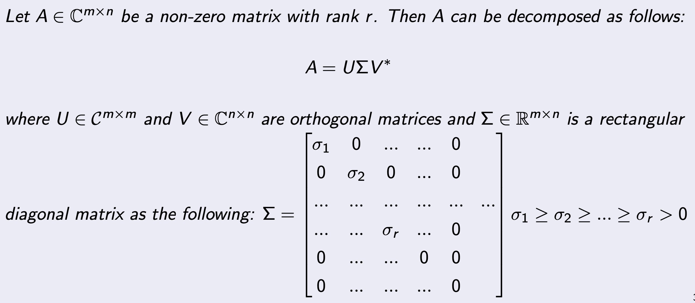<br />
핵심은 조건에 상관없이<br />
"모든 모든 모든"<br />
m x n Matrix 를 위와 같이 쪼갤 수 있다는 것이다.<br />
(모든 이기에 가장 강력한 도구이다)<br />
쪼갠 조각들을 살펴보자.<br />
U: Left singular Matrix<br />
(Orthogonal)<br />
V: Right singular Matrix<br />
(Orthogonal)<br />
Σ: Rectangular Diagonal Matrix<br />
가운데 시그마 matrix를 위에서 보면, 0인 대각 성분들이<br />
n &gt; r 부분<br />
에 존재하는 것을 알 수 있다.<br />
그 쓸모없는 부분을 그냥 제거해버리고 U,V의 차수를 줄여서 다음과 같이<br />
Reduced Singular Value Decomposition<br />
도 가능하다.<br />
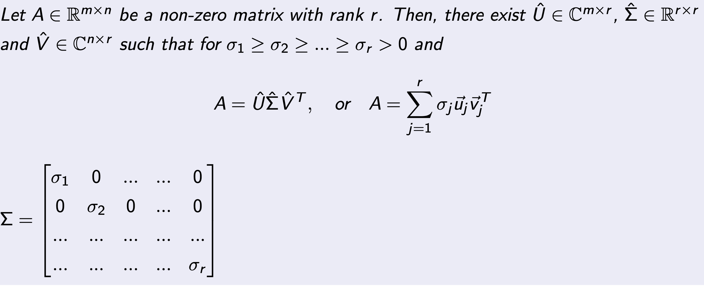<br />
그렇다면, 이런 질문이 든다. 하나의 A에 대해서 여러 분해가 가능할까???<br />
정답은,<br />
Σ<br />
는 유일하지만,<br />
U, V<br />
는, A - n x n Matrix 일때만 유일하고,<br />
나머지는 여러개가 존재할 수 있다.<br />
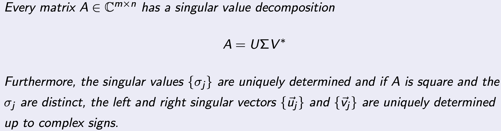<br />
그렇다면, 어떻게 도대체 저렇게 모든 A에 대해<br />
분해가 가능한거지??? How come<br />
그 이유는 SVD가 어떤 작업인지를 이해하면 자동으로 납득이 된다.<br />
Matrix A<br />
를 다음과 같이 정의하자.<br />
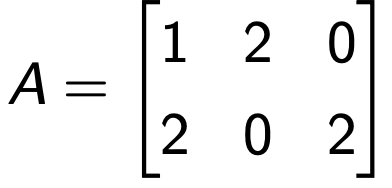<br />
저 위에 정의된 A의 숫자들은 열벡터들로 구성이 되어 있고,<br />
우리가 익숙한<br />
표준 기저들 (e1,e2,e3)를 기준<br />
으로<br />
expand되어있는 정도를 나타낸다.<br />
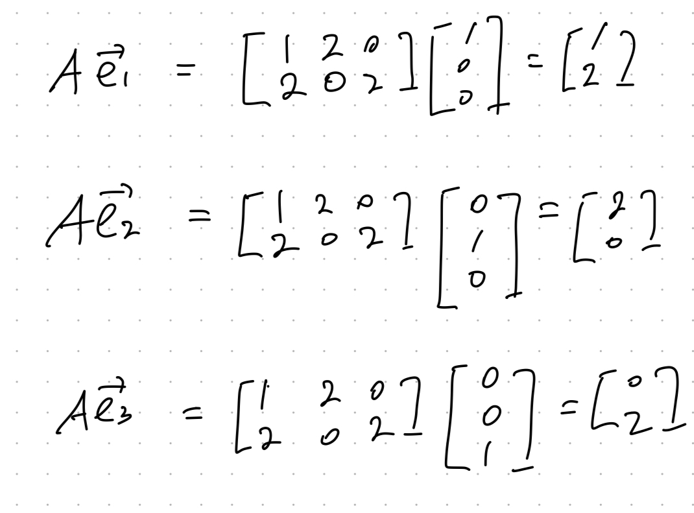<br />
즉, A는 사실 표준기저들을 이용해서 표현된 부산물이라는 것이다.<br />
그렇다면, 이 A를 다른 표준벡터(기저벡터)로 표현한다면?<br />
즉,<br />
표현하는 기저벡터에 따라<br />
같은 행렬을<br />
다르게 표현할 수 있다는 것이다.)<br />
=============================================<br />
그렇다면, 표현하는 방식에 따라서 어떠한 모습이 바뀌지만,<br />
불변하는 무엇인가<br />
가 있지 않을까???<br />
그 불변하지 않는 무엇인가가<br />
-&gt;<br />
eigen vectors, eigen values<br />
이다.<br />
=============================================<br />
위 개념을 가지고<br />
면 지금부터 벡터 x를 변환해보자.<br />
1번과정을 보면, x를 A로 mapping하여 y로 만들어주고,<br />
U<em>로 다시한번 벡터를 변환시켜준다.<br />
2번 과정은 V</em>x로 벡터를 전환해주고, sigma를 곱해주면,<br />
Diagonal Matrix이기 때문에 elongation을 진행해주는 것.<br />
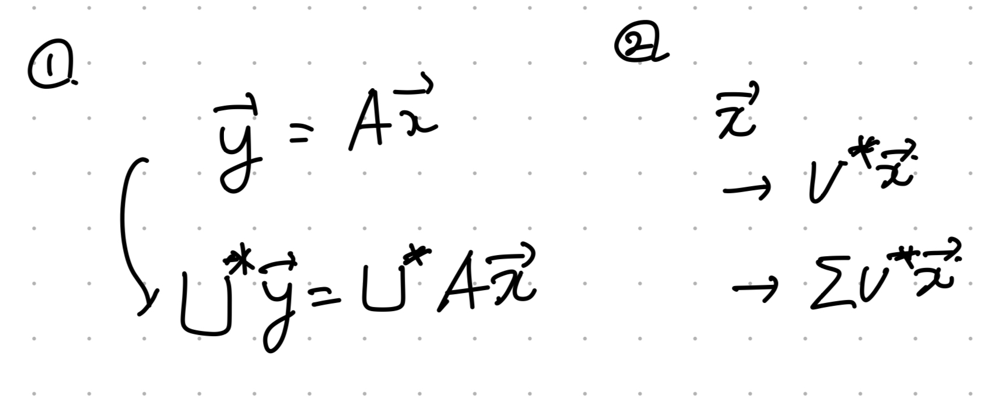<br />
즉, x를 다른 방식으로 변환하였고,<br />
A가 어떤 값이든지, 같은 변환을 sigma, V, U로 가능하다는 것이다.<br />
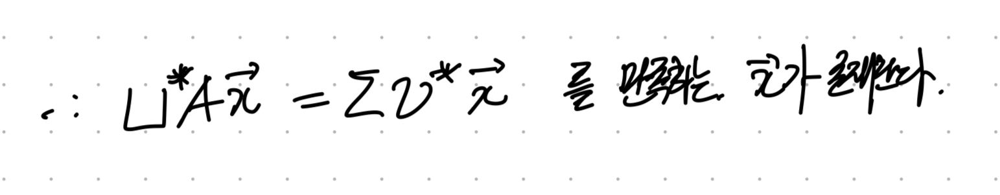<br />
for all A<br />
U는 Orthogonal Matrix이므로 넘겨주면,<br />
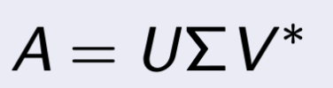<br />
자 다시. 1,2 과정을 살펴보자.<br />
<br />
U<em>(Ax)가 의미하는 것은,<br />
:Ax를 U의 열벡터들을 기저로 삼았을 때의 좌표<br />
V</em>x가 의미하는 것은,<br />
:x를 V 의 열벡터들을 기저로 삼았을 때의 좌표<br />
이해하기 위해서, x' 을 V* x 벡터라고 가정하자.<br />
이를 정리해보면 다음과 같다.<br />
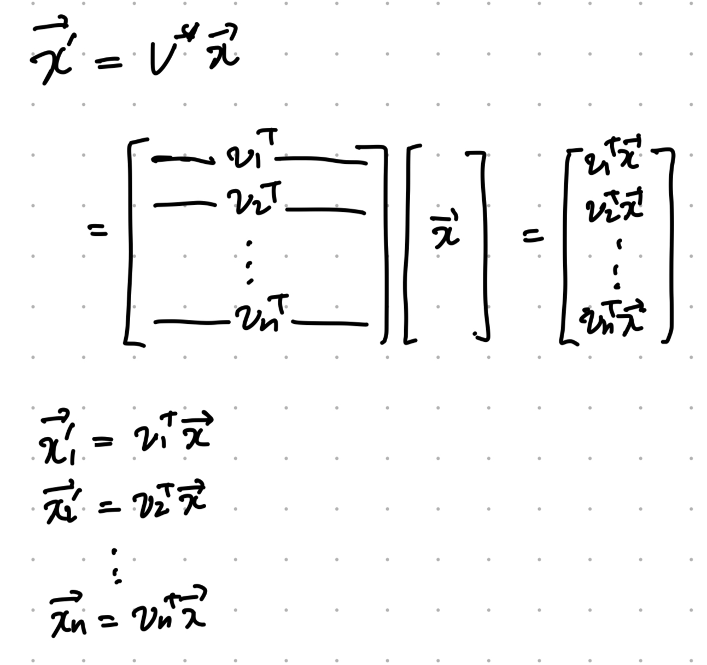<br />
x1' 은 x벡터에서 v1방향을 나타내는 값.<br />
애매모호한 개념이지만 우리가 이미. 사용하고 있었다.<br />
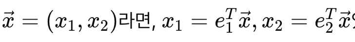<br />
x1 은 e1방향으로의 값,<br />
x2는 e2방향으로의 값<br />
이라는 사실은 누구나 다 알 고 있다.<br />
사실은 위 내적 과정이 빠진 것이었다.<br />
정리하면, 1,2 과정은 U,V의 기저벡터로의 전환이고,<br />
전환된 벡터가 같을때 아래 SVD가 성립된다.<br />
<br />
결론적으로, 마지막으로 정리하면<br />
모든 행렬은<br />
표현하는 기저벡터<br />
에 따라 다르게 생겼다.<br />
(사람은 염색, 성형, 성장하면서 바뀌지만, but 이름은 바뀌지 않는다)<br />
(행렬에게 이름은 고유벡터, 고유값)<br />
위 논리로, 우리는 모든 A를 다음과 같이 바꿀 수 있다.<br />
A -&gt; Σ<br />
(diagonal Matrix)<br />
위 과정을 가능하게 해주는 변환도구로,<br />
2개의 기저벡터 집합<br />
이 필요하다.<br />
그 집합이<br />
U: Left singular Matrix<br />
(Orthogonal)<br />
V: Right singular Matrix<br />
(Orthogonal)<br />
==============================================================<br />
이와 다르게 비슷하지만 두개의 기저벡터 집합이 아니라 하나의 집합으로 분해한.<br />
eigen value decomposition<br />
의 핵심은<br />
A의 고유벡터를 기저벡터로 사용하여 변환가능하다는 것.<br />
A -&gt; Σ<br />
심지어 sigma는 eigen value들이 대각성분을 이룬다는 것.<br />
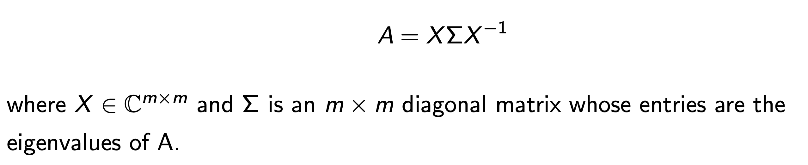<br />
SVD와 차이점은, 1개의 bases로 표현한다는 것<br />
A : n x n square Matrix이어야만 한다는 것.<br />
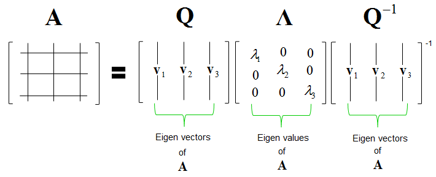<br />
===========================================================================<br />
놀랍게도 지금까지 복습이었고,<br />
이제 진짜 SVD를 컴퓨터로 어떻게 연산하는 지를 알아보자.<br />
(우리의 주제는 Computational linear Algebra임을 잊지말자 ^^ (저에게 하는 말입니다.))<br />
총 2가지 방법이 존재한다.</li>
<li>EVD Hermitan Matrix A<em>A or AA</em><br />
바로 첫번째 방법부터 살펴보자.<br />
원리는 간단하다<br />
A -&gt; A<em>A (Hermitian Square Matrix)로 전환<br />
해주는 것.<br />
H = A</em>A라고 하면, H는 Square Matrix이기 때문에 EVD가 가능해진다.<br />
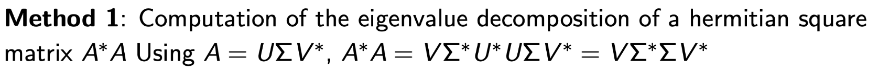<br />
즉 V는 H의 Eigen vector이 열벡터인 Matrix<br />
Σ<em>Σ 는 eigenvalues가 대각성분인 행렬!!!!!<br />
V,<br />
Σ 를 A</em>A로부터 구할 수 있으니, U를 구하는 것은 식은죽 먹기이다.<br />
<br />
(분해성공)<br />
자세한 과정은 다음과 같다.<br />
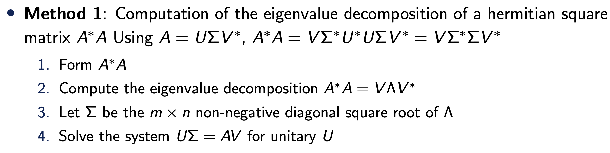<br />
바로 예시로 들어가보자.<br />
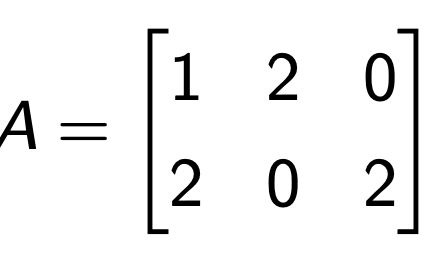<br />
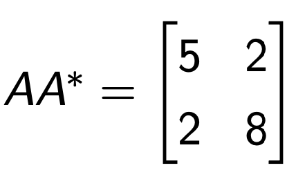<br />
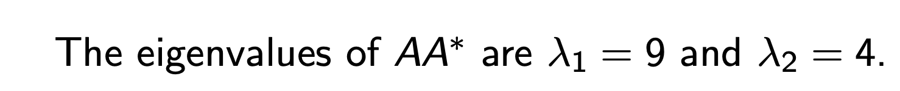<br />
<br />
A<em>A 이든 AA</em>이든 둘다 Hermitan 이므로 상관이 없다.(편한걸로)<br />
<br />
따라서,<br />
Σ<em>Σ 는 eigenvalues가 대각성분<br />
(singular value of A) ^2 = (Eigen value of AA</em> or A<em>A)<br />
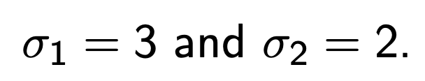<br />
V는 AA</em>의 Eigen vector이 열벡터로 이루어진 Matrix이므로,<br />
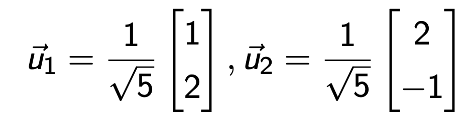<br />
eigen vectors of AA<em> = U<br />
이제 마지막으로 V만 구하면 SVD성공이다.<br />
간단하게 SVD의 정의를 활용하면<br />
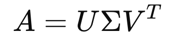<br />
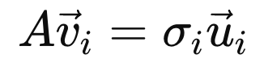<br />
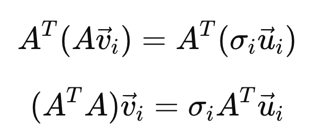<br />
<br />
<br />
<br />
한편, H = A</em>A의 eigen value = singular value of A ^2이므로 다음과 같다.<br />
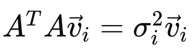<br />
위 식의 좌항에 대입해주면, v를 sigma, A, u로 표현가능하다.<br />
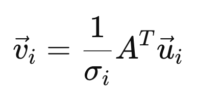<br />
따라서,<br />
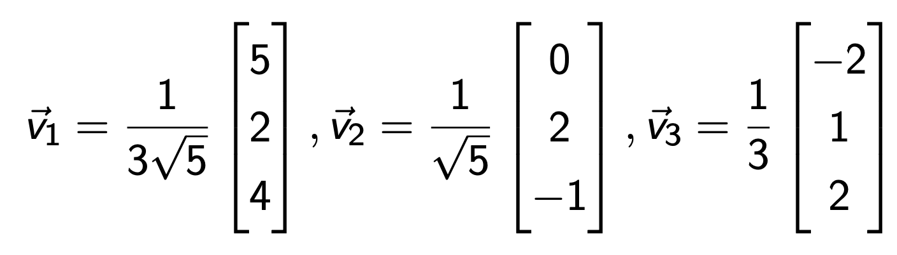<br />
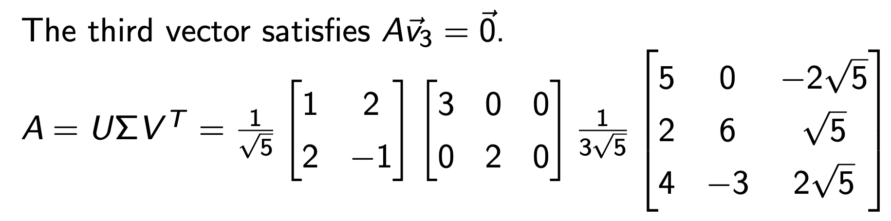<br />
<br />
<br />
singular Value decomposition Clear.<br />
이 과정을 사용하려면, 무조건 A*A = H 의 Eigen vector Value를 구하는게 이 과정을 거쳐야 한다.<br />
하지만 위 과정이 가장 컴퓨터 연산이 오래걸리고, 난해한 문제이다.<br />
이제, 마지막으로 두번째 방법을 살펴보자.</li>
<li>Golub-Kahan Bidiagonalization<br />
먼저 A가 square Matrix라면 다소 특이한 Hermitan Matrix를 A로 만들어주자.<br />
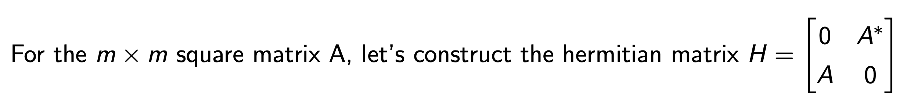<br />
한편 A를 SVD해주면, 다음의 관계식을 얻을 수 있다.<br />
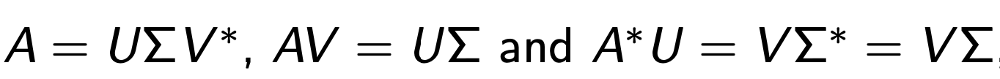<br />
이후 H를 EigenValue Decomposition form으로 변환할 수 있다.<br />
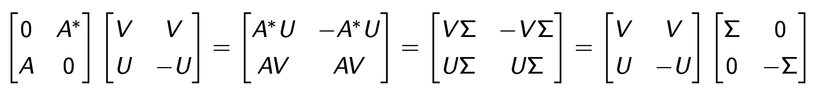<br />
따라서 H의 Eigen value, vector를 구한다면 V, U, sigma 3개를 전부다 알 수 있다는 것.<br />
(H는 더 안정적인 Hermitan Matrix이지만, H 2n x 2n Matrix이므로 연산시간이 늘어나는 단점)<br />
다음 m x n Matrix form of A일때를 살펴보자,<br />
아이디어는 생각보다 간단하다. Method1에 적용되어도 안전한 Bidiagonalized Matrix로 A를 바꿔주는 것.<br />
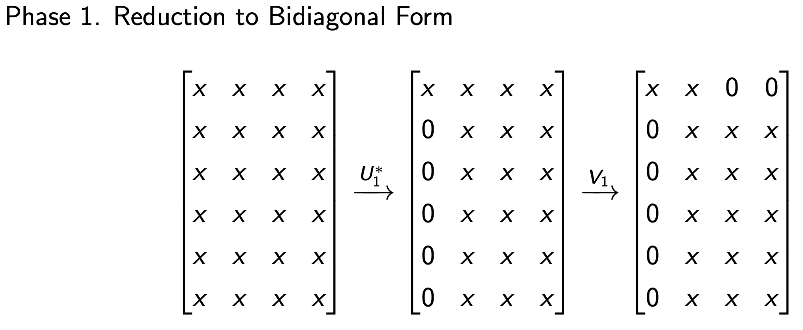<br />
바꿔 주는 방법은 앞뒤로 Orthogonal Matric which works as a Reflector<br />
를 곱해준다.<br />
QR factorization에서 Householder algorithm에서 다루었다 싶이.<br />
우리는 특정한 column의 요소들을 0으로 만드는 방법에 대해서 다루었다.<br />
같은 원리로, 특정한 column을 0으로 만들어 주고, 무엇보다 A의 앞뒤에 U<em>, V를 계속해서<br />
쌓아서 곱해주는게 핵심이다.<br />
그 결과 diagonal term이 아닌 A -&gt; Bidiagonal Term B로 전환된다.<br />
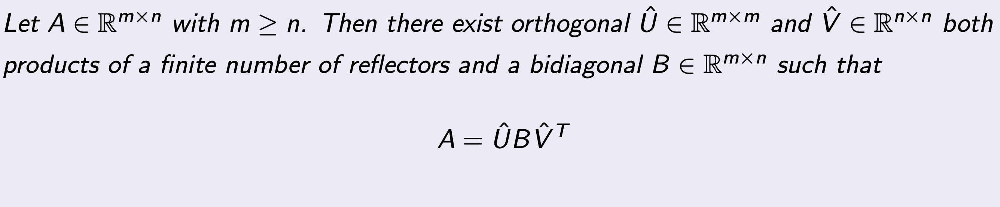<br />
여기서 이제 마지막으로<br />
Method1<br />
을 사용해주어,<br />
B -&gt; Σ<br />
로 전환해주자.<br />
이때 Bidiagonal term은 B</em>B가 훨씬 안정적이고,<br />
condition number도 굉장히 작아서, Method1에서 단점을 보완할 수 있게 된다.<br />
========================================================================<br />
이번시간까지<br />
EigenValueDecomposition,<br />
SingularValueDecomposition<br />
의 수학적 원리를 이해했고,<br />
컴퓨터로 연산하는 알고리즘을 다루었다.<br />
우리의 궁극적인 목표는 A를 분해하여,<br />
Ax = b를 수치적 오차와 컴퓨터 cost를 줄이어 연산하는 것.<br />
이를 위해서 EVD, SVD를 배운것이다!!!!</li>
</ol>{% endraw %}
